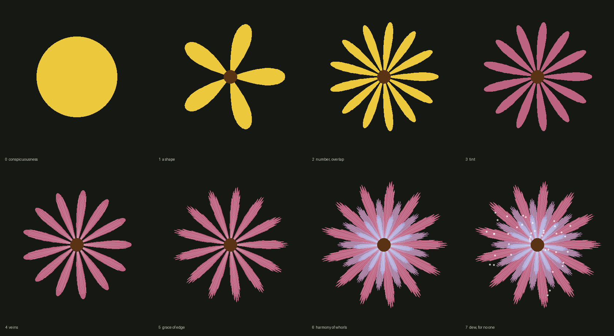

"Why should the wonderful grace, and delicacy, and harmony of tint be added?" — Frederick Temple, Bampton Lectures, 1884.

The same ladder, in words. The ladder on a note on a door. And where no one looks. Two reports. A statement of loss. A letter west. Disc.
Eight flowers, each the previous one plus one thing nobody needed. Where does the necessary stop? (First sketch, session 1, 2026-10-07.)